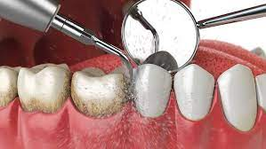

Nuestras especialidades

Resinas dentales $1,000.00
No necesita tiempo de recuperación
Las resinas dentales son compuestos utilizados en la reparación de dientes o para mejorar la estética. Son una mezcla de plastico y vidiro.
Algunas recomendaciones son:
- Evitar alimentos duros
- Evitar bebidas calientes o frías
- Mantener buena higiene bocal
Limpiezas dentales $500.00
No necesita tiempo de recuperación
Las limpiezas dentales son procedmientos odontológicos en los cuales se retira placa bacteriana, sarro en dientes y encías, etc. El objetivo principal es prevenir enfermedades.
Algunas recomendaciones son:
- Cepillarse los dientes frecuentemente
- Usar hilo dental diariamente
- Evitar alimentos azucarados


Prótesis dentales $3,000.00
No necesita tiempo de recuperación
Las prótesis dentales son dispositivos dentales diseñados para reemplazar uno o más dientes pérdidos, pueden ser fijos o remobibles.
Algunas recomendaciones son:
- Cepillar los dientes diariamente
- Limpiar las prótesisi frecuentemente
- Evitar alimentos duros o pegajosos